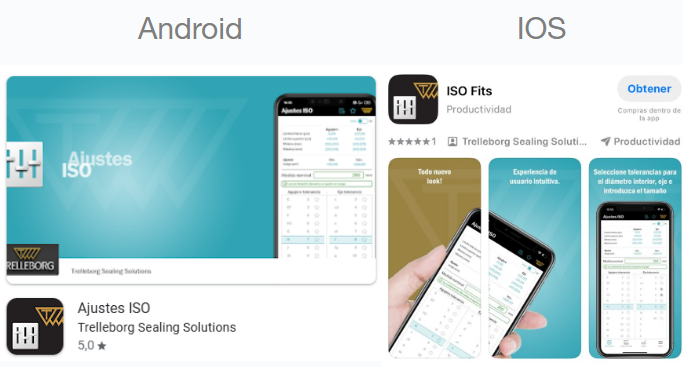

Acceder a la Play Store o App Store y buscar la siguiente aplicación
Verificar el sistema de unidades en el que se está trabajando
Colocarla medida nominal del eje o del agujero haciendo uso del teclado en pantalla

Seleccionarla posición y la tolerancia, desplazando de arriba hacia abajo hasta que se marquen en color celeste

Verificarlas medidas de límite superior e inferior mostrados en la parte superior de la pantalla
La calidad de una medida está estrechamente vinculada con laincertidumbre de medición, que es el margen de duda sobre la exactitud delvalor obtenido.
Lastolerancias de fabricacióndefinen qué tan precisas deben ser las dimensiones para que el producto cumpla con sufunción.
Cuanto más estrictas sean lastolerancias, mayor será la precisión de medida requerida para verificar que se cumplen lasespecificaciones.
Esta necesidad de precisión influye directamente en losequipos de medición, elcontrol de calidad y loscostos de producción.
Garantizar que la pieza cumpla correctamente su propósito de uso.
Asegurar que diferentes piezas encajen y funcionen de manera uniforme.
Mantener la viabilidad y estabilidad del proceso productivo.